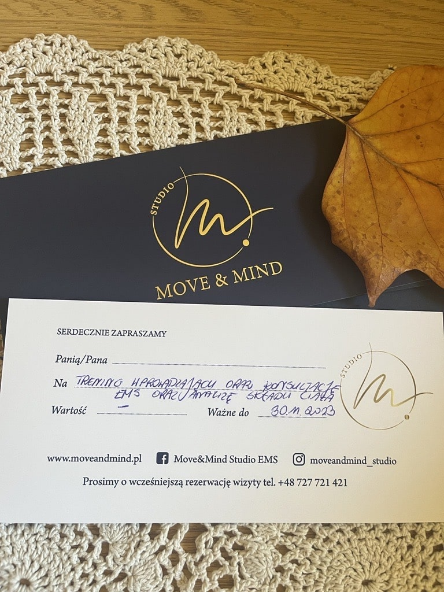
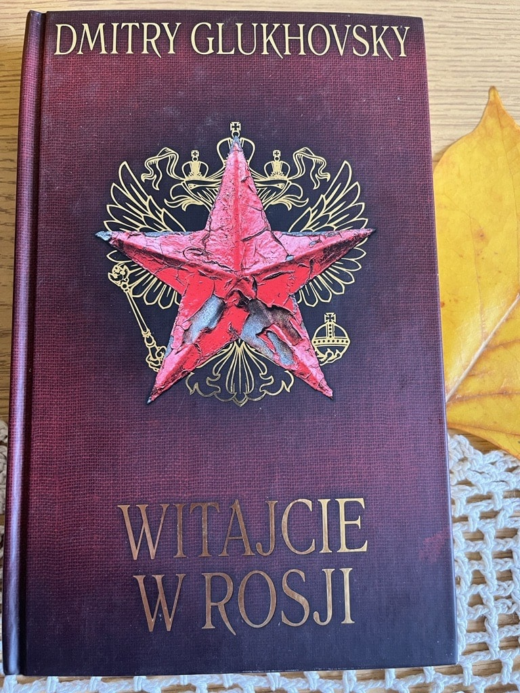
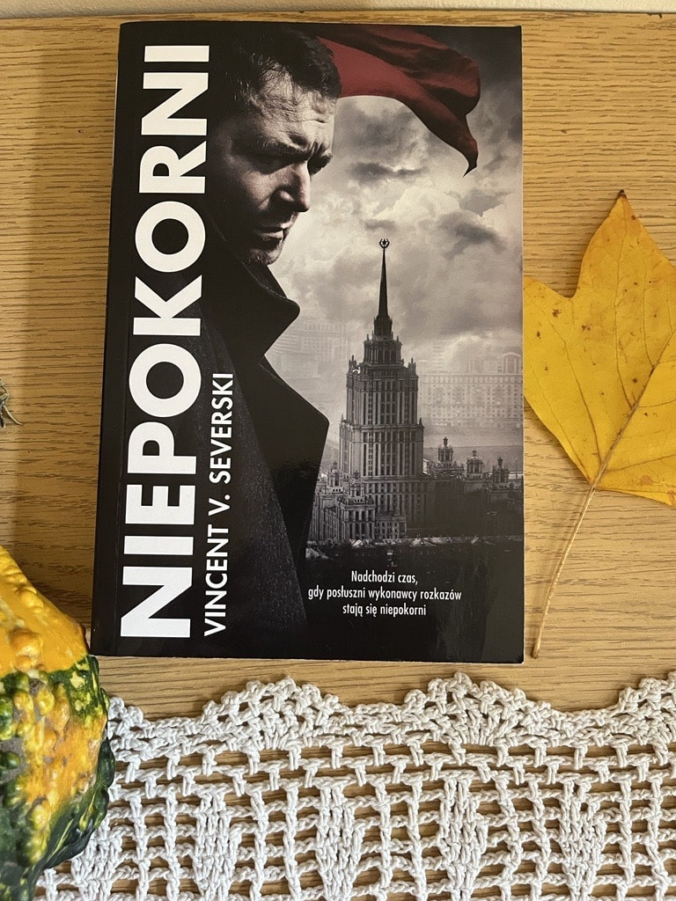

Ważne!
#ogłoszenie#ważne
Pomóżmy Link do zrzutki!
Prosimy wszystkich o wsparcie dla naszej nauczycielki, koleżanki, aby mogła być poddana terapii ratującej życie. Pieniądze ze zbiórki pomogą w długotrwałym leczeniu i rehabilitacji.
W imieniu całej społeczności Zespołu Szkół Politechnicznych w Łodzi z całego serca prosimy o wsparcie finansowe. Dziękujemy za każde, nawet najmniejsze wpłaty. Podarujmy Lidce szansę na życie!
#001Piłka Euro 2012
#inne
Piłkę przekazał Pan Tomasz Tomaszewski
#002Koszulka T-shirt
#inne
Koszulkę przekazała Pani Ewa Koneczna
#003Księga Smoków Polskich - Bartłomiej Grzegorz Sala
#książka
Książkę przekazała Pani Dorota Białkowska.
„Księga smoków polskich” to literacki i historyczno-etnograficzny opis 25 legendarnych bestii – smoków,
wielkich węży i podobnych im stworów. Autor, historyk i etnolog, kreśli ich wizerunki,
dokonując skrupulatnej charakterystyki potworów,
przytaczając opracowane na nowo swoim piórem legendy i podania, sięgając co źródeł postaci i wątków,
a nawet opisując miejsca związane z potworami.
Dzięki temu "Księga smoków polskich" łączy na swoich kartach elementy popularnonaukowe i stricte literackie,
będąc jednocześnie przemyślanym kompendium wiedzy o wyobrażeniach naszych przodków i ich kulturowych źródłach oraz zajmującym czytadłem,
wypełnionym opowieściami o krwiożerczych bestiach, zatrwożonych krainach, wyczekujących ratunku księżniczkach,
dzielnych rycerzach i sprytnych rzemieślnikach.
Całości dopełniają pełne baśniowej atmosfery ilustracje cenionego duetu rysowników Pawła Zycha i Witolda Vargasa.
#004Mitologia Nordycka - Neil Gatman
#książka
Książkę przekazała Pani Dorota Białkowska.
Wielkie nordyckie mity to jeden z korzeni,
z których wyrasta nasza tradycja literacka -
od Tolkiena, Alana Garnera i Rosemary Sutcliff po „Grę o tron” i komiksy Marvela.
Stały się też inspiracją dla wielu obsypanych nagrodami bestsellerów Neila Gaimana.
Teraz sam Gaiman sięga w odległą przeszłość, do oryginalnych źródeł tych opowieści,
by przedstawić nam nowe, barwne i porywające wersje największych nordyckich historii.
Dzięki niemu bogowie ożywają - pełni namiętności, złośliwi, wybuchowi, okrutni - a
opowieść przenosi nas do ich świata - od zarania wszechrzeczy, aż po Ragnarok i zmierzch bogów.
Barwne przygody Thora, Lokiego, Odyna czy Frei fascynują współczesnego czytelnika,
a żywy, błyskotliwy język sprawia, że aż proszą się o to, by
czytać je na głos przy ognisku w mroźną gwiaździstą noc.
#005Efektor - Thomas Arnold
#książka
Książkę przekazała Pani Anna Buczek.
David Ross - starszy detektyw wydziału zabójstw z Cleveland - zostaje
zawieszony w obowiązkach służbowych za napaść na aresztowanego.
Na prośbę pewnej kobiety jedzie do Michigan, gdzie zniknął jego były "towarzysz broni",
z którym kilka dni wcześniej odbył dziwną rozmowę.
Wynajmowany przez Jamesa Adamsa pokój został przeszukany i zdewastowany,
jednakże kamery ochrony motelu nie zarejestrowały niczego podejrzanego. Ross dochodzi do wniosku,
że być może to sam Adams dokonał zniszczeń. Tylko dlaczego?
#0061984 - George Orwell
#książka
Książkę przekazała Pani Karolina Pel.
Penguin Readers is an ELT graded reader series for learners of English as a foreign language.
With carefully adapted text, new illustrations and language learning exercises,
the print edition also includes instructions to access supporting material online.
Titles include popular classics, exciting contemporary fiction, and thought-provoking non-fiction,
introducing language learners to bestselling authors and compelling content.
The eight levels of Penguin Readers follow the Common European Framework of Reference for language
learning (CEFR). Exercises at the back of each Reader help language learners to practise grammar,
vocabulary, and key exam skills. Before, during and after-reading questions test
readers' story comprehension and develop vocabulary.
Visit the Penguin Readers website
Exclusively with the print edition, readers can unlock online resources including a digital book,
audio edition, lesson plans and answer keys.
Winston Smith re-writes history for the Ministry of Truth in Oceania. Big Brother and
the Thought Police watch everyone for signs of Thought Crime. But when Winston falls
in love with Julia, he begins to have new ideas and hopes. Winston and Julia start to question
world that they live in - but Big Brother does not like independent thought.
#007The Grandfather - Mario Puzo
#książka
Ksiązkę przekazała Pani Karolina Pel.
Penguin Readers is an ELT graded reader series. Please note that the eBook edition
does NOT include access to the audio edition and digital book. Written for learners of English
as a foreign language, each title includes carefully adapted text, new illustrations and
language learning exercises. Titles include popular classics, exciting contemporary fiction, and
thought-provoking non-fiction, introducing language learners to bestselling authors and
compelling content. The eight levels of Penguin Readers follow the Common European
Framework of Reference for language learning (CEFR). Exercises at the back of each Reader help
language learners to practise grammar, vocabulary, and key exam skills. Before, during and
after-reading questions test readers' story comprehension and develop vocabulary.
#008Strach stary i nowy - Thomas Arnold
#książka
Książkę przekazała Anna Buczek
Po ucieczce pierwszych ludzi z Terenów Centralnych i opanowaniu tych ziem przez olbrzymów,
gigantów i niszczycieli, Archeon pozostawał przesiąknięty strachem, śmiercią oraz pierwotnym złem
powołanym do życia przez Stwórców. Ku swej uciesze sprowadzali oni na świat kolejne monstra pustoszące
lądy i oceany, a ich jedynym celem była chęć niszczenia tego, co już istniało. Pożoga i zagłada trwały
setki lat, ale również i ta era, jak każda, miała swój początek oraz koniec, zapisując się w legendach.
Krew wsiąkła głęboko w ziemię, która na powrót przyjęła brunatną barwę, a rozkładające się ciała dały
początek nowemu życiu. Strach uleciał i rozproszył się w powietrzu niczym dym z przygaszonej pochodni.
W tym wszystkim jedynie Śmierć pozostała niezmienna. Cierpliwie czekała na odważnych, którzy postanowili
wrócić i ponownie określić się mianem Archeonów - pierwotnej nacji zamieszkującej niegdyś Tereny Centralne.
#009Projektowanie oprogramowania dla zupełnie początkujących. Owoce programowania. Wydanie V - Tony Gaddis
#książka
Książkę przekazał Pan Krzysztof Muszyński
Programowanie to nie tylko umiejętność pisania kodu oraz organizowania go w funkcje, procedury i moduły.
Nawet najbardziej finezyjne języki i najnowocześniejsze paradygmaty programowania nie zapewnią sukcesu,
jeśli projekt aplikacji jest nieprzemyślany, a jej logice brakuje... logiki. Z drugiej strony
poświęcenie odrobiny czasu na stworzenie dobrego projektu sprawi, że praca nad pisaniem kodu
będzie łatwiejsza, sama aplikacja będzie pracować lepiej i bardziej niezawodnie,
a późniejsze modyfikacje i rozwój oprogramowania przysporzą mniej problemów.
Jeśli planujesz napisać swoją pierwszą aplikację, sięgnij po tę książkę. Aby zrozumieć zawartą w
niej treść, nie trzeba znać żadnego języka programowania. Pokazano tu, jak działają programy i jak
można z ich wykorzystaniem rozwiązywać konkretne zadania. Wiedza o zasadach projektowania jest
przekazywana za pomocą pseudokodu i schematów blokowych. Omówiono zarówno podstawowe zagadnienia,
takie jak typy danych, zmienne, funkcje, jak i nieco bardziej zaawansowane: programowanie obiektowe,
tworzenie graficznych interfejsów użytkownika i pisanie programów sterowanych zdarzeniami.
W tym wydaniu książki wprowadzono wiele poprawek i uzupełnień, dotyczących między innymi
języków Java, Python i C++ oraz programowania aplikacji dla urządzeń mobilnych.
#010Dekoracja
#dekoracja
Dekorację przekazał Pan Bartosz Kondak.
#011Dekoracja
#dekoracja
Dekorację przekazał Pan Bartosz Kondak.
#012Figurki
#dekoracja
Figurki wydrukowane przez męża Pani Emili Cieślak.
#013Obraz
#dekoracja
Obraz namalowany przez męża Pani Agnieszki Sikorskiej.
#014Obraz
#dekoracja
Obraz namalowany przez męża Pani Agnieszki Sikorskiej.
#015Obraz
#dekoracja
Obraz namalowany przez męża Pani Agnieszki Sikorskiej.
#016Naszyjnik
#biżuteria
Naszyjnik przekazany przez Panią Agnieszkę Sikorską.
#016Voucher na darmowy jednorazowy udział w zajęciach grupowych
#voucher
Voucher przekazało studio Move&Mind
#017Voucher na trening wprowadzający oraz konsultację EMS oraz analizę składu ciała
#voucher 
Voucher przekazało studio Move&Mind
#018Voucher na trening personalny z Lilą Sayed
#voucher
#019Voucher na harbatkę i ciastko na długiej przerwie z Panią Moniką Bogdan
#voucher
Voucher przekazała Pani Monika Bogdan.
#020Ciastko na godzinę wychowawczą dla całej klasy zrobione przez Panią Joanna Karolak
#voucher
Voucher przekazała Pani Joanna Karolak.
#021Voucher na projekt i pomowalonie T-shirtu w stylu graffiti
#voucher
Voucher przekazał Mateusz Marczewski z IITC.
#022Witajcie w Rosji - Dmitry Glukhosky
#książka 
Książkę przekazała Pani Anna Buczek.
Prowokacja. Skandal. Nowa literatura.
Długo oczekiwana i zaskakująca książka Dmitrija Glukhovsky’ego, autora międzynarodowego
bestsellera „Metro 2033”. W kilkunastu błyskotliwych opowiadaniach Glukhovsky wprawną ręką kreśli
alegoryczny portret swojej ojczyzny: państwa, w którym korupcja sięga szczytów władz,
kraju współrządzonego przez oligarchów i podporządkowanego ich interesom. „Witajcie w Rosji” to
iście wybuchowa mieszanka: fikcja miesza się tu z rzeczywistością, satyra i ironia sprawiają, że nie
wiadomo, czy śmiać się, czy płakać, a wszystko to w ulubionej przez Glukhovsky’ego
konwencji science fiction. To wyjątkowa książka, dotykająca ważnych problemów współczesnej Rosji w
sposób niezwykle oryginalny, dosadny i nad wyraz trafny.
Być może pierwsza od wielu lat próba uczciwego opowiedzenia o Rosji widzianej oczami nowego pokolenia.
#023Makaron w sakwach, czyli rowerem przez Andy i Kordyliery - Piotr Strzeżysz
#książka
Książkę przekazała Pani Agata Borowska-Jocz.
O książce:
Polecieć na drugi koniec świata, aby męczyć się długą jazdą na rowerze i żywić się kolejnymi
porcjami makaronu z makaronem? Pedałować wiele dni przez zaśnieżone góry Alaski, czujnie
rozglądając się za głodnymi niedźwiedziami? I w dodatku robić to za własne pieniądze, a co gorsza,
dla przyjemności? Dla większości z nas to czyste szaleństwo, ale na szczęście nie dla Piotra Strzeżysza!
O autorze:
Autor po raz kolejny zadziwia nas swoim zapałem, energią i żelazną konsekwencją w dążeniu do celu. Jest przy tym rzadkim przykładem osoby wręcz emanującej otwartością na wszelkie przygody i chęcią poznawania nowych ludzi. Tym razem postanowił wyruszyć do obu Ameryk, a plonem tych wypraw jest książka opisująca, co przeżył, kogo spotkał na swojej drodze i dlaczego w życiu rowerzysty tak ważny jest tytułowy makaron.
#024Plac Senacki 6 PM - Vincent V. Severski
#książka
Książkę przekazała Pani Barbara Grochowska.
Niekwestionowany mistrz powieści szpiegowskiej powraca z zupełnie nowym thrillerem o narodzinach
imperium Putina. Październik 1990 roku. Z bazy Zapadnaja Lica na dalekiej północy ZSRR wypływa
najpotężniejszy okręt podwodny Dymitr Doński, dowodzony przez asa floty morskiej kapitana Golicyna.
Jednostka ma na pokładzie ogromny arsenał atomowy, który może zachwiać równowagą sił światowych mocarstw.
To mocno niepokoi Waszyngton i Londyn. Sojusznicy podnoszą stopień gotowości i analizują sytuację.
W ZSRR panują głasnost i pierestrojka, a u władzy jest Michaił Gorbaczow, który zapowiedział koniec zimnej wojny.
Amerykanie i Brytyjczycy za wszelką cenę muszą ustalić motywy Rosjan. Wszystkie drogi prowadzą do Helsinek.
Do gry wkracza MI6, który wysyła tam swojego najlepszego agenta, Martina.
Rozpoczyna się gra wywiadów, a w tle upada Związek Radziecki i rodzi się nowe imperium – podwaliny
państwa rosyjskiego Putina.
#025Niepokorni - Vincent V. Serverski
#książka 
Książkę przekazała Pani Barbara Grochowska.
Po udanej operacji wywiezienia Michaiła Popowskiego z Rosji, Sara i Konrad wracają do Polski.
Podczas ich nieobecności kierownictwo Agencji Wywiadu wszczyna śledztwo w sprawie ich nielegalnej
akcji i rozwiązuje Wydział Q. Tymczasem w Europie wzrasta napięcie, a w Polsce zbliżają się przedterminowe wybory.
Opozycja prze do władzy za wszelką cenę. Informacje Popowskiego o rosyjskiej agenturze wpływu mogą
jednak doprowadzić do politycznego kataklizmu. Nowy szef rosyjskiego wywiadu Krugłow wraz z generałem
GRU Łopatinem planują wykorzystać ucieczkę Popowskiego do przebudowania sytuacji wewnętrznej w Polsce i Europie.
Wysyłają za nim Jagana i super szpiega Rudolfa. Konrad i Sara wiedzą doskonale, że informacje od
Popowskiego mogą doprowadzić w Polsce do wybuchu, więc nielegalnie zbierają Wydział Q do ostatniej akcji.
#026Niepokorni - Vincent V. Serverski
#książka
Książkę przekazała Pani Barbara Grochowska.
Po udanej operacji wywiezienia Michaiła Popowskiego z Rosji, Sara i Konrad wracają do Polski.
Podczas ich nieobecności kierownictwo Agencji Wywiadu wszczyna śledztwo w sprawie ich nielegalnej
akcji i rozwiązuje Wydział Q. Tymczasem w Europie wzrasta napięcie, a w Polsce zbliżają się przedterminowe wybory.
Opozycja prze do władzy za wszelką cenę. Informacje Popowskiego o rosyjskiej agenturze wpływu mogą
jednak doprowadzić do politycznego kataklizmu. Nowy szef rosyjskiego wywiadu Krugłow wraz z generałem
GRU Łopatinem planują wykorzystać ucieczkę Popowskiego do przebudowania sytuacji wewnętrznej w Polsce i Europie.
Wysyłają za nim Jagana i super szpiega Rudolfa. Konrad i Sara wiedzą doskonale, że informacje od
Popowskiego mogą doprowadzić w Polsce do wybuchu, więc nielegalnie zbierają Wydział Q do ostatniej akcji.
#027Antologia Poezji Miłosnej - Zespół Wydawnictwa IBIS
#książka
Książkę przekazała Pani Jadwiga Jezierna.
#028Szczeka, merda, mówi. Jak być najlepszym człowiekiem swojego psa - Zofia Zaniewska-Wojtków, Piotr Wojtków
#książka
Książkę przekazała Pani Anna Buczek.
ZROZUM, O CZYM SZCZEKA TWÓJ PIES… I ZOSTAŃ JEGO NAJLEPSZYM CZŁOWIEKIEM
Dlaczego twój pies podbiega do zupełnie obcych osób?
Co powiedziałby o psich parkach?
Czy istnieje coś takiego jak charakter rasy?
Nawet najwięksi psiarze mogą mieć kłopoty ze zrozumieniem swoich podopiecznych i ich zachowań.
Psy to istoty wrażliwe i skomplikowane. Potrafią odczuwać złość, smutek, radość. Bywają zazdrosne,
mogą czuć się winne, a emocje okazują na wiele różnych sposobów. Dobry opiekun pamięta o potrzebach
swojego przyjaciela i uczy się jego języka.
Zofia Zaniewska-Wojtków i Piotr Wojtków przedstawiają świat z perspektywy psów i pokazują, jak się
dogadać ze swoim pupilem. Autorzy pomogli już setkom tysięcy czworonogów przełamać lęki i ograniczyć
zachowania agresywne. Dzięki ogromnej wiedzy oraz latom praktyki rozumieją, o czym szczeka pies.
W książce opowiadają o tym, dlaczego psy są tak różnorodne, przypominają długą historię przyjaźni
ludzi i zwierząt i uczą, jak być najlepszym człowiekiem swojego psa.
#029Płytkie nacięcie - Karin Slaughter
#książka
Książkę przekazała Pani Anna Buczek.
Druga część z kryminalnego cyklu, którego akcja rozgrywa się w hrabstwie Grant, na amerykańskiej prowincji.
To może być najtrudniejsza, a na pewno najbardziej bolesna – bo dotycząca dzieci – sprawa w karierze Jeffreya Tollivera,
komendanta policji w niewielkim Heartsdale w stanie Georgia. W tym samym czasie,
gdy Sara Linton – miejscowa doktor pediatrii i koroner – znajduje w publicznej toalecie poćwiartowane
zwłoki noworodka, policjant musi zapobiec morderstwu nastoletniego Marka Pattersona przez
domniemaną matkę dziecka, Jenny Weaver. Tylko dzięki interwencji policjanta udaje się uratować życie Marka.
Jenny, niestety, nie miała tyle szczęścia…
Jak wykaże sekcja zwłok, nie miała go również wcześniej – liczne ślady na ciele dziewczynki jasno wskazują,
że stosowano wobec niej najpotworniejsze formy przemocy, również seksualnej. Kto mógł się dopuścić takiego
bestialstwa wobec dziecka? Odpowiedź na to pytanie przejdzie najśmielsze oczekiwania Tollivera i Linton, a
skala okrucieństwa, jakie wyrządzono, na zawsze już położy się cieniem na historii na pozór spokojnego, normalnego miasteczka.